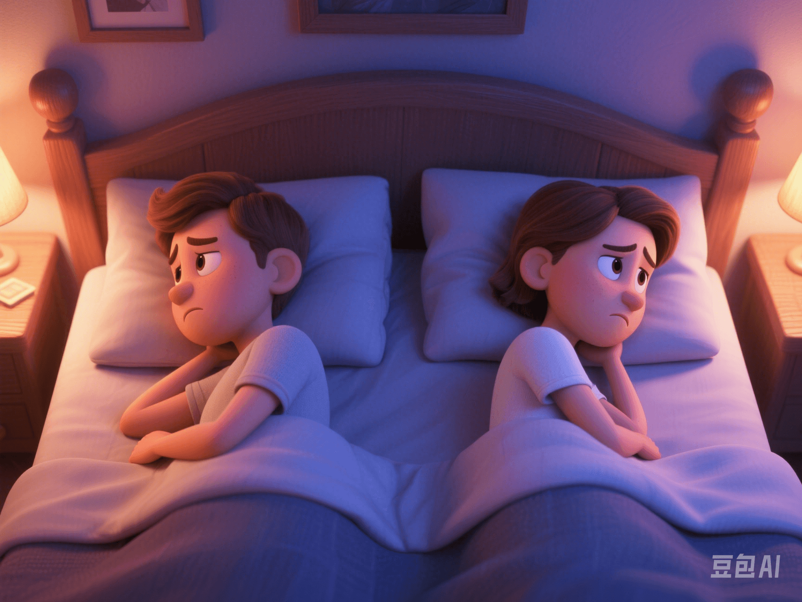

The Distortion of Real Sex Life by Pornographic Content: Impacts and Challenges
PeaceLove.Top Insights :2025-04-13
Introduction
With the popularization of the Internet and smartphones, the consumption of pornographic content has become increasingly common globally, especially among young people. However, more and more studies show that long - term and high - frequency consumption of pornographic content may have a negative impact on individuals' sex life and sexual psychology. 💔
🧠 Research Findings: High - frequency Porn Consumption and Decreased Sexual Satisfaction
According to a study in JAMA Psychiatry, 40% of high - frequency porn consumers experienced a significant decline in their real - life sexual satisfaction. This means that individuals who overly rely on pornographic content to satisfy their sexual desires often have difficulty achieving the same level of satisfaction in real sexual relationships. This finding has attracted wide attention, especially in modern society where more and more people seek sexual stimulation through the virtual world.
📊 Highlights of the research data:
- 40% of high - frequency porn consumers reported low satisfaction in their real sex life.
- These individuals often struggle to establish a deep emotional connection with their partners during sex, leading to emotional alienation and disharmony in sexual relationships.
- Imbalance in sexual desire: Excessive reliance on virtual visual stimulation reduces the brain's perception of the sexual attractiveness of real - life partners.
💡 Why Does Pornographic Content Distort Sex Life?
1️⃣ Over - stimulation Leads to Lack of Attraction in Real Relationships
Long - term exposure to pornographic content, especially high - intensity and extreme sexual scenes, changes the brain's response to sexual stimuli. After getting used to these virtual stimuli, the brain loses interest or becomes dissatisfied with real - life intimate behaviors. 🌪️
2️⃣ Unrealistic Sexual Expectations
Pornographic content often presents exaggerated and unrealistic sexual behaviors, along with extraordinary physical performances. This may lead viewers to have unrealistic expectations of their own and their partners' sexual performances, causing disappointment and a lack of pleasure or satisfaction in real sexual relationships. 😔
3️⃣ Impact on Emotional Connection
The consumption of pornographic content often lacks emotional connection as it focuses on visual stimulation rather than emotional communication. This makes it easy for individuals to ignore their partners' emotional needs during real sexual activities, resulting in mechanical sex with a lack of emotional investment. 💔
🔥 Real Impacts: Emotional Alienation and Imbalance in Sex Life
1️⃣ Emotional Isolation
Both men and women who consume porn at a high frequency often show a higher degree of emotional isolation. They may find it more difficult to have in - depth emotional communication and connection with their partners, leading to a decline in the quality of the relationship and even affecting their intimacy. 💔
2️⃣ Decreased Sexual Satisfaction
Research has found that the exaggerated and unrealistic sexual performances in pornographic content make it more difficult for viewers to be satisfied in actual sex. ⛔ This phenomenon is particularly severe among those who consume porn for a long time. They gradually realize that real - life sex cannot reach the extreme pleasure they expect in the virtual world, resulting in a significant decline in overall sexual satisfaction.
3️⃣ Mental Health Problems
Individuals who overly rely on pornographic stimulation may face more mental health problems such as anxiety and depression. Since their sexual and emotional needs are not effectively met, it may affect their self - esteem and confidence. 🧠
🌱 How to Cope: Rebuild a Healthy Sexual Concept
Although the impact of pornographic content on sex life has been widely discussed, we can still improve the situation through some effective methods:
1️⃣ Reduce or Quit Excessive Viewing of Pornographic Content
Reducing dependence on pornographic content is the first step to improving sex life. By reducing the frequency of viewing or quitting completely, it helps to re - arouse interest and satisfaction in real - life sex. 🚫
2️⃣ Rebuild Intimate Relationships
Focus on the emotional connection with your partner. Strengthen the relationship through more communication, care, and understanding, rather than just focusing on sexual acts themselves. ❤️
3️⃣ Accept Real Sexual Needs
Realize that real - life sex is not perfect, and everyone's sexual desires and needs vary. Avoid using unrealistic standards to measure your own or your partner's performance. 💡
4️⃣ Seek Psychological Support
If excessive reliance on pornographic content has affected mental health or sex life, seeking professional psychological counseling or sex therapy is also a good option. 👨⚕️
📝 Conclusion
The impact of pornographic content consumption on sex life cannot be ignored, especially the damage to the psychological and emotional aspects. Therefore, we need to view these virtual stimuli more rationally and attach importance to the emotional connection and quality of sex life in reality. True sexual satisfaction comes from a healthy emotional relationship and self - identity, rather than endless virtual stimuli. 🌟 By consuming rationally, paying attention to emotional needs, and establishing a healthier sexual concept, we can achieve a more satisfying and fulfilling sex life in reality.